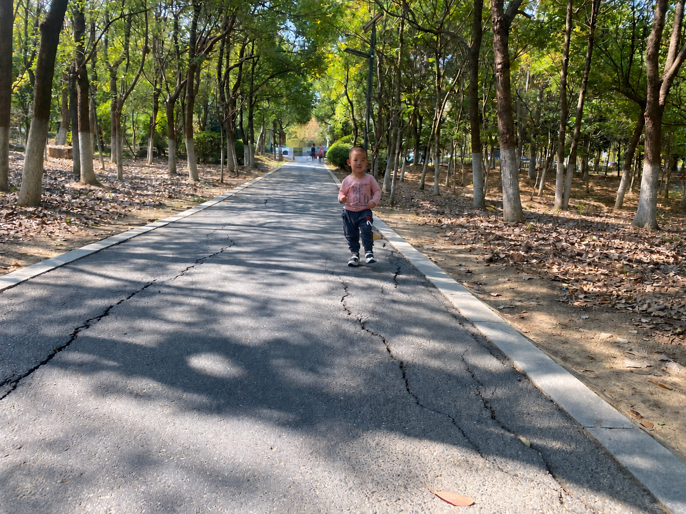

ONE DAY AT A TIME
October 16, 2022
A place for every day.
1 story · 2 photos


Sunday, 16 October 2022 · 21st day of the ninth month in the Chinese lunar calendar. Yang Yu stands on a tree-shaded path in a pink top. The photo has been edited with AI for privacy, with distant passers-by obscured. Some road textures have also been altered by AI.
A Little Doctor Beside GrandmaLittle story
A Little Doctor Beside Grandma
Sunday, 16 October 2022 · 21st day of the ninth month in the Chinese lunar calendar.
The photos from that day show Yang Yu playing outside and spending time at home with Grandma. In one, he is standing in the middle of a path in a pink top, with shadows from the trees falling across the ground.
At the time, Yang Yu especially loved his toy doctor's kit. It came in a case with a doctor's coat, a stethoscope and other small toys. He loved playing doctor.
In the photo at home, he is sitting beside Grandma, wearing the white doctor's coat over his pink top. Grandma is shelling walnuts, with jars and a bowl of walnut shells on the table. He smiles at the camera and raises one hand in a V sign.
Edited from Dad’s account and photographs
Read this story →
Sunday, 16 October 2022 · 21st day of the ninth month in the Chinese lunar calendar. Wearing his play doctor's coat, Yang Yu makes a V sign towards the camera while sitting beside Grandma, who is shelling walnuts. The photo has been retouched and edited with AI for privacy. Grandma's face is pixelated.
A Little Doctor Beside Grandma